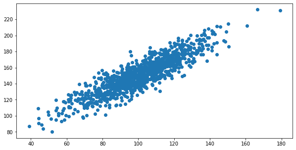
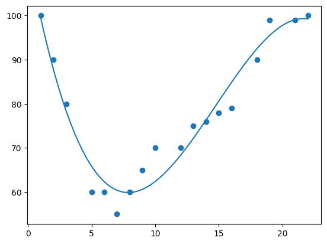

Unit 3 — Correlation & Regression
Hands-on notebook covering covariance, Pearson's correlation coefficient, and linear, multiple and polynomial regression.
Covariance and Pearson's r
Two synthetic variables of 1,000 points each: data1 (mean ≈ 100.8, sd ≈ 19.6) and data2 = data1 + noise (mean ≈ 151.1, sd ≈ 22.4). The covariance is 389.8 and Pearson's r is 0.888.
Covariance is positive, so the variables move together, but its size depends on the units of each variable and is hard to interpret. Pearson's r rescales it to the range −1 to 1, so 0.888 reads directly as a strong positive linear relationship.

Simple linear regression
scipy.stats.linregress on a 13-point example (car age vs. speed) returns the slope, intercept and r, which are used to build a prediction function y = intercept + slope × x. For this data the fit is slope ≈ −1.75, intercept ≈ 103.1 and r ≈ −0.76 (a fairly strong negative relationship), so the predicted value at x = 10 is about 85.6.
The first version of this cell failed with NameError: name 'stat' is not defined, because I wrote stat.linregress instead of using the imported stats module. The next cell uses the correct name and runs.
Multiple linear regression
Using scikit-learn's LinearRegression, CO2 emission is predicted from two independent variables, car weight and engine volume. The notebook interprets the coefficients (weight 0.00755, volume 0.00781): each extra 1 kg adds about 0.0076 g of CO2, and each extra 1 cm³ adds about 0.0078 g. As a check, a 1300 cm³ car weighing 2300 kg is predicted at about 107 g, and increasing the weight by 1000 kg raises that to 107.21 + 1000 × 0.00755 ≈ 114.76 g.
Polynomial regression
When data is not a straight line, a degree-3 polynomial (numpy.polyfit / poly1d) fits the speed of 18 cars passing a toll booth at different times of day. The curve follows the dip and rise in speed far better than a straight line would (R² ≈ 0.94 for this fit).

Note: the multiple-regression cell reads cars.csv, which is not stored in the repo, so that cell will only run where the file is available.